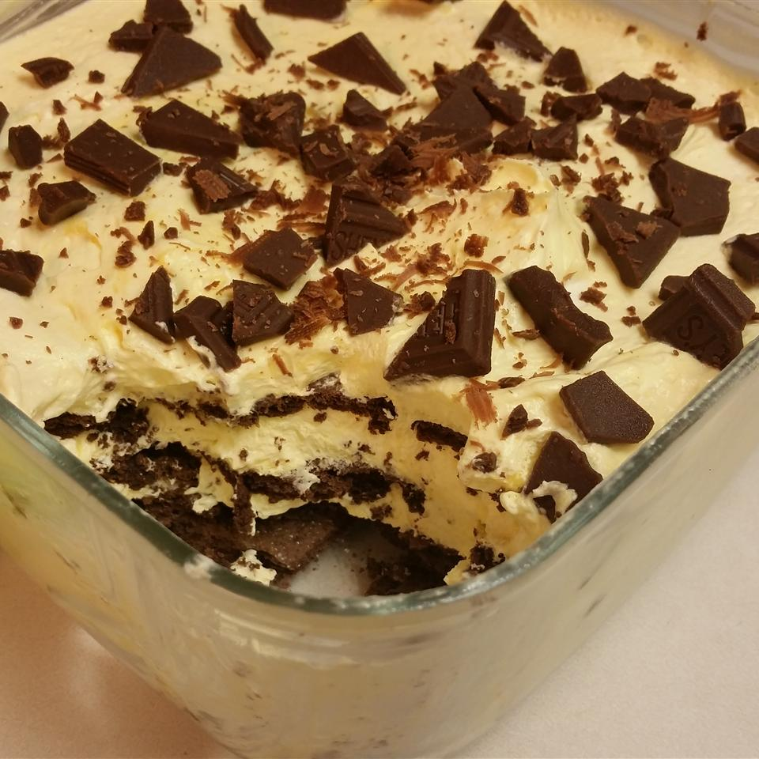

Chocolate Lasagna

Easy to make and low in fat! This dessert will be a big hit!
This chocolate lasagna is based on a white chocolate
pudding mix and skim milk.
Pieces of a simple milk chocolate can be used as a delicious topping.
Ingredients:
- packages fat-free instant white chocolate pudding mix
- 3 cups skim milk
- 2 tubs fat-free whipped topping, divided
- 1 box chocolate graham crackers
- 1 milk chocolate candy bar
- Whisk white chocolate pudding and skim milk together in a bowl
until thickened and smooth; fold in 1 tub whipped topping.
- Line a 9x13-inch casserole dish with 1 layer of graham crackers.
- Spread 1/2 the pudding mixture over graham cracker layer.
- Repeat layering with graham crackers and remaining pudding mixture,
ending with a layer of graham crackers.
- Spread 1 tub whipped topping over top graham cracker layer;
sprinkle with candy bar pieces.
- Chill in refrigerator until set, 2 to 4 hours.
Click here for the original link of the recipe.